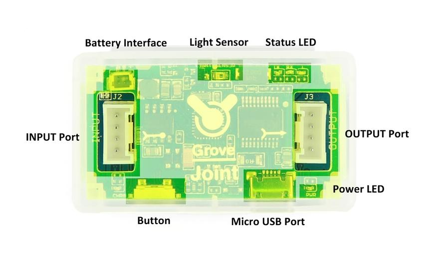
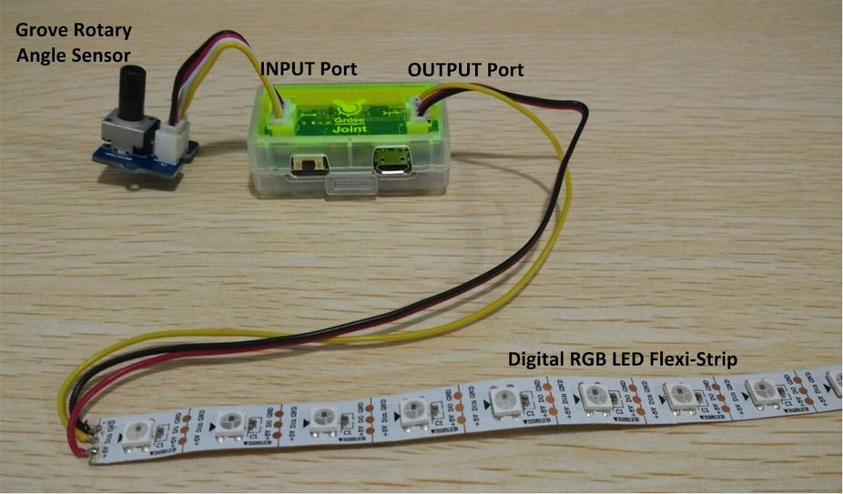
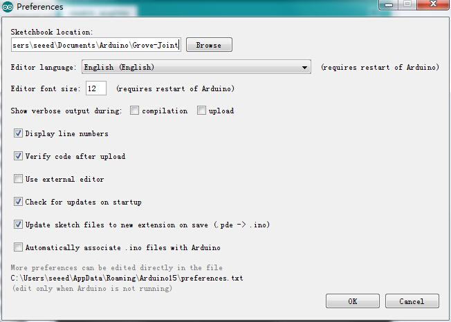
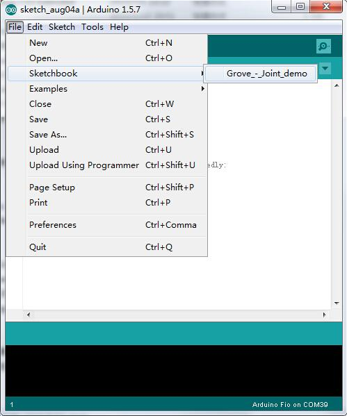

Grove - Joint v2.0 shares many similarities with Seeeduino Lotus. It is a mini ATMEGA328 Microcontroller development board. It uses an Atmel ATMEGA328P-MU and CH340. ATMEGA328P-MU is a high performance, low power AVR 8-Bit Microcontroller. CH340 is a USB bus converter chip that can realize a USB to serial interface. Grove - Joint v2.0 has two Grove interfaces included I2C port and two digital I/Os. It else support battery powered. You can do some simple applications with it.

Here is block diagram of Grove - Joint module which consists of following parts.

Now, Let's begin to use the mini Arduino board .
Grove - Joint v2.0 uses CH340 to download. It needs a driver to be installed.
Totally compatible with serial application program in computer endpoint Windows operation system
Download the driver from here: http://www.wch.cn/download/CH341SER_MAC_ZIP.html
On Mac OS Yosemite:
sudo nvram boot-args="debug=0x146 kext-dev-mode=1"
The driver is not signed in Yosemite, so you need to bypass the signed driver check.
If you want restore your Mac’s setting, you can exit developer mode by redefining the boot-arg to your previous settings, or clear your boot-args as follows: sudo nvram -d boot-args
To see what the current boot-args are, if any, type: sudo nvram boot-args
Now we are making a demo for Grove - Joint v2.0 which require following modules.
Grove - Joint is compatible with Arduino.
If this is your first time using Arduino, Please put hand on here to start your Arduino journey.
Grove - Joint got two Grove sockets for connecting two modules above : They are:
As shown below:

Connect Grove - Joint to computer use a micro USB cable, if the status LED not blink , press the button .
Click here to download testing code and decompress it to any folders(e.g. Drive D or desktop）
Now you need simple configurations for Arduino sketchbook.
Launch Arduino IDE and click File>Preferences and add absolute location for downloaded testing code at Sketchbook location.

After configurations, please restart Arduino, click File>Sketchbook and choose Grove- Joint demo after which testing code will show up.

Click Tools>Board to choose Arduino Fio and select respective serial port.
Now click Upload(CTRL+U) to burn testing code. Please refer to here for any error prompt and you can also add comment on forum
After upload completed, you can rotate the angle sensor then you'll find the RBG LED is lighted one by one.
The Battery+ is connected to A2. You can read this pin to get the voltage of battery.
Upload the below code to get voltage of the battery.
// Grove - Joint get Battery const int pinBattery = A2; int getAnalogData(int pin) { long sum = 0; for(int i=0; i<32; i++) { sum+=analogRead(pin); } return (sum>>5); } void setup() { Serial.begin(9600); Serial.println("Grove - Joint V2 test - Battery"); } void loop() { int value = getAnalogData(pinBattery); float voltage = value/1023.0*5.0; Serial.print(voltage, 2); Serial.println(" V"); delay(1000); }
Note that when you insert Grove Joint to a PC, the battery was charged, so maybe the voltage you read is not right.